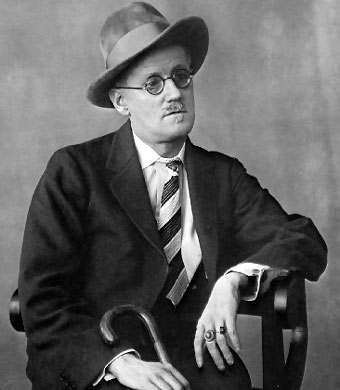

James Joyce fue un escritor irlandes, a las afueras de Dublin, en 1882. Polifacetico con un uso inusual y revolucionario del lenguaje y narrativo muy original. Siendo, quizas, el escritor en lengua inglesa mas influyente del siglo XX. En sus libros retrata con hermoso realismo a la sociedad dublinesa contemporanea a el, siendo l ametropoli en centro de todas sus historias Influidoprincipalmente por el trabajo de Dante, Flaubert e incluso los filosofos escolasaticos. Para Joyce, el hecho del crecimiento dentro de un sociedad fuertemente catolica hace cuestionarse y hacer una dicotomia naturalista de su tiempo, llena de humanidad en niveles sin precedentes y casi nunca alcanzados o replicados